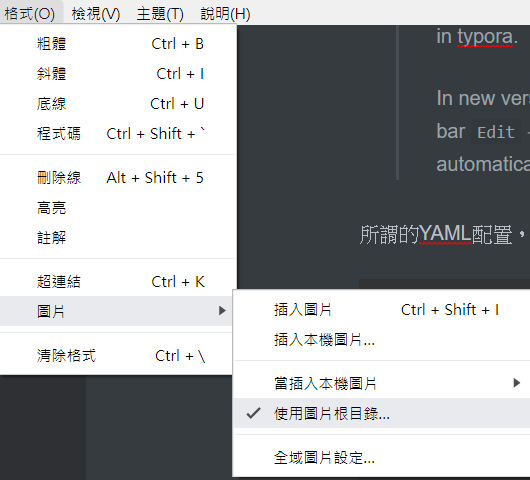

圖片顯示
在Typora在插入圖片時，有兩種用法
1 |  |
如果要同時在Typora和Hexo中顯示，則使用
1 | <img src="2020-02-21_11_03_03_Image.jpg" /> |
記錄Typora在使用Hexo的一此小技巧
因為原來使用Notepad++來編輯文章，可以有使用排版有問題，所以使用此軟體來幫助排版的速度，此文章是來記錄一些遇到的問題，希望下次可以不用在查一遍資料,目前有時候在預覽時有一此問題，可以用Notepad++來儲存一下或是在段落之間按一下Enter鍵來多一行
圖片設定
可以在建立新的文章時，自動加上typora-root-url，修改一下post.md，加入typora-root-url: 記錄Typora的使用如下
1 | --- |
加入圖片
因為有更新了Typora，所以原來圖片的編輯方式，在Typora編輯時看不到，在Hexo上傳後可以看到，所以要保留之前的文章的圖片位置，又想要在之後編輯的文章可以看到，因為我文章的圖片是放在自已文章的資料夾下，所以需要加入自已文章的網址，在官方文檔中找到
Relative path to certain folder
If you’re using markdown for building websites, you may specify a URL prefix for image preview in local computer with property
typora-root-urlin YAML Front Matters.For example, input
typora-root-url:/User/Abner/Website/typora.io/in YAML Front Matters, and thenwill be treated asin typora.In new version, instead of manually input
typora-root-urlproperty, you could just click item from the menu barEdit→Image Tools→Use Image Root Pathto tell Typora to generatetypora-root-urlproperty automatically.
所謂的YAML配置，就是在Hexo的文檔頭部加上最下面這一行：
1 | title: 前端學習HTML-CSS-JAVASCRIPT |
注意變成每次有新的文章要設定一次在Typora->格式->圖片->使用圖片根目錄接下來選擇資料夾，會在上面所述的YAML配置，加上一行typora-root-url來指定目錄，為了要同時在typora和hexo可以顯示，以下圖的顯示的路徑變成2019-08-06_09_52_46_Image.png不需要加上/不然在真的blog會顯示不出來。

加入圖片
先設定使用相對路徑
目前我的本地端是每一個文章是有自已的目錄所以有圖片是放在那個資料夾下，為了可以在編輯時一樣顯示圖片需要來設定一下在檔案->偏好設定會跳出設定的畫面在插入圖片的選項中勾選優先使用相對路徑如下張圖

將圖片複制到文章的資料夾下
我的文章是設定各有一個資料夾，所有要顯示的圖片放到此資料夾，然後在Typora直接拖放就可以顯示圖片檔案結構如下圖所示 在路徑的前面加入/ 例如=>/記錄Typora的使用/Img-2019-01-03-09-52-54.png